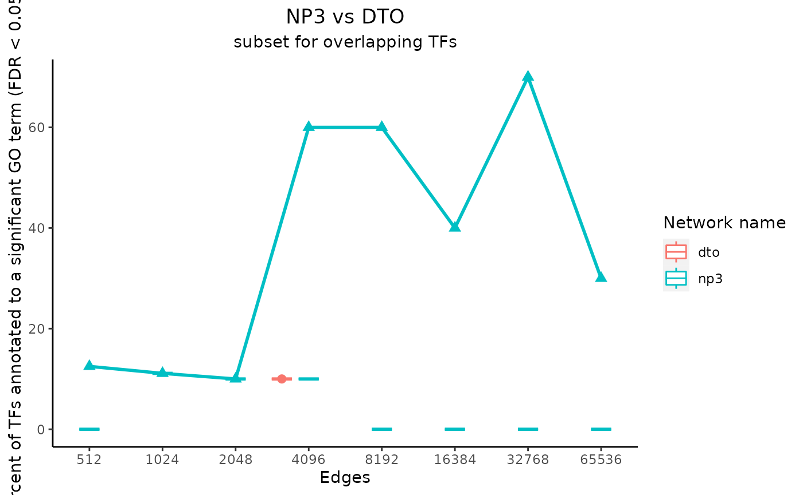

GOeval
GOeval.RmdFirst, install and load this package. It is easiest to use either the “devtools” or “remotes” package to do so. “remotes” is a smaller package, so it might be the better option if you do not want to install all of “devtools.”
devtools::install_github("westbrooktm/GOeval", ref = "dev")
# OR
remotes::install_github("westbrooktm/GOeval", ref = "dev")Now that the package is loaded, we need a network as a tab-separated .tsv file where the first column is the source nodes, the second column is the target nodes, and (if using subset_network) the third column is the edge scores. All genes should be written as their Ensembl gene ID.
To run the following examples, access the example data stored in “vignette_data.tar.gz” and extract it into a local folder.
data_path <- system.file(package = "GOeval", file.path("data", "vignette_data.tar.gz"))
# wherever you want to store the example data
data_dir <- "GOeval_data"
untar(data_path, exdir = data_dir)Basic evaluation:
Here are the required arguments to run the evaluate function on the “small_np3.tsv” network, which includes 10 transcription factors.
# path to a network in proper format
network_path <- file.path(data_dir, "small_np3.tsv")
# path to a .txt file with one column that includes all the genes
# that may appear in the network
reference_path <- file.path(data_dir, "h1_k562_overlap_universe.txt")
# wherever you want to store the generated output
out_dir <- "GOeval_output"
# a short name for the network without any spaces
network_name <- "np3"Run the ‘evaluate’ function. Look at its arguments in the documentation for ways to customize the output.
The possible arguments for all functions can be found at the “Reference” tab at the top of this page or https://westbrooktm.github.io/GOeval/reference/index.html.
net_1_data <- evaluate(network_path, reference_path, out_dir, network_name,
# additional arguments allow for output customization
# for example, permutations = 1 allows a faster run time than the default 3
# get_annotation_overlap = TRUE causes the computation of the annotation_overlap metric
permutations = 1, get_annotation_overlap = TRUE)
#> [1] "network_size = 8"
#> [1] "length(terms$geneSet) = 8"
#> [1] "network_size = 8"
#> [1] "length(terms$geneSet) = 8"
#> [1] "network_size = 9"
#> [1] "length(terms$geneSet) = 9"
#> [1] "network_size = 9"
#> [1] "length(terms$geneSet) = 9"
#> [1] "network_size = 10"
#> [1] "length(terms$geneSet) = 10"
#> [1] "network_size = 10"
#> [1] "length(terms$geneSet) = 10"
#> [1] "network_size = 10"
#> [1] "length(terms$geneSet) = 10"
#> [1] "network_size = 10"
#> [1] "length(terms$geneSet) = 10"
#> [1] "network_size = 10"
#> [1] "length(terms$geneSet) = 10"
#> [1] "network_size = 10"
#> [1] "length(terms$geneSet) = 10"
#> [1] "network_size = 10"
#> [1] "length(terms$geneSet) = 10"
#> [1] "network_size = 10"
#> [1] "length(terms$geneSet) = 10"
#> [1] "network_size = 10"
#> [1] "length(terms$geneSet) = 10"
#> [1] "network_size = 10"
#> [1] "length(terms$geneSet) = 10"
#> [1] "network_size = 10"
#> [1] "length(terms$geneSet) = 10"
#> [1] "network_size = 10"
#> [1] "length(terms$geneSet) = 10"After a couple minutes, the directory at out_dir should contain a folder of subsets of the original network, a folder that contains the ORA summaries and sets of target genes, and a .pdf file with plots of metrics calculated from those summaries. The evaluate function returns the data used to make the plots as a list of DataFrames.
The run time of the evaluate function changes with the size of the network and the number of permutations. With larger networks, it may take up to several hours. It is thus recommended to use a computing cluster when working with large networks. It is possible to speed up the process by calling each step manually as shown in the “Advanced usage” section below and running the webgestalt_network function calls in parallel.
NOTE: If you try to run the evaluate function again with the same
out_dir and network_name, you must first delete the contents of
“out_dir/
Now, let us compare with a second network. The “small_dto.tsv” network does not have edge scores, so no network subsets will be created. Generate the data for this network in a similar way as for the first one.
net_2_data <- evaluate(file.path(data_dir, "small_dto.tsv"),
file.path(data_dir, "h1_k562_overlap_universe.txt"),
out_dir,
"dto",
permutations = 1, get_annotation_overlap = TRUE,
# without multiple subsets, the plot would just be one dot
# so we can tell it not to bother
plot = FALSE)
#> [1] "network_size = 10"
#> [1] "length(terms$geneSet) = 10"
#> [1] "network_size = 10"
#> [1] "length(terms$geneSet) = 10"
# set main plot titles
title_text <- "NP3 vs DTO"
subtitle_text <- "subset for overlapping TFs"
# perTF controls the x-axis label
# true only if the network subset sizes were determined by
# average number of edges per TF instead of by total number of edges
perTF <- FALSE
plot_data <- plot_metrics(c(net_1_data, net_2_data), title_text, subtitle_text, perTF, annotation_overlap = TRUE)
Advanced usage:
All intermediary steps in the evaluation can be run separately with the following functions.
subset_network to create network subsets with the top-weighted edges
webgestalt_network on each of the network subsets to generate ORA results
get_metrics on the stored ORA results to calculate summary statistics for plotting
plot_metrics using the output of get_metrics
We will now walk through step-by-step evaluation of the network “np3_dtoTFs.tsv”, which has 56 TFs and a total of 629,832 edges.
1. subset_network
“np3_dtoTFs.tsv” is tab-separated and contains 3 columns: the TFs, the regulated genes, and the scores.
This function sorts the input network in descending order by the values in the third column and creates files in the output_folder with only the first two columns of the rows that have the highest scores.
input_file <- file.path(data_dir, "np3_dtoTFs.tsv")
output_directory <- file.path(out_dir, "np3_dtoTFs_subsets")
name <- "np3"
# Since we are setting num_possible_TFs, this will be the average number of
# edges from each TF in each subset.
edges <- c(8, 16, 32, 64, 128, 256, 512, 1024, 2048, 4096)
# The "np3_dtoTFs.tsv" network was made to include only 56 TFs.
num_possible_TFs <- 56
subset_network(input_file, output_directory, name, edges, num_possible_TFs)The result is that now the “data/np3_dtoTFs_subsets” folder contains 10 files: “np3_8.tsv” through “np3_4096.tsv”.
- webgestalt_network
Run ORA using the webgestalt_network function on each of the network subsets created in step 1. These files are tab-separated with the first column containing the TF names and the second column containing the regulated gene names. “h1_k562_overlap_universe.txt” contains one column of the names of all genes that could appear in the network. The network_name should be different for each subset, so I choose to use the subset file names without the extension.
Note organism = “hsapiens” and database = “geneontology_Biological_Process_noRedundant” is the default database for ORA.
You can see more options for organism and database with WebGestaltR::listOrganism() and WebGestaltR::listGeneSet() respectively.
Also note that the run time of the below code could take well over an hour, so this vignette does not actually evaluate the code. The run time is highly dependent on the number of subsets, the number of TFs in each of those subsets, and the number of permutations. The process can be sped up (in this case by 10x) by running webgestalt_network on each subset at the same time using a computing cluster or similar.
for (subset in list.files(file.path(data_dir, "np3_dtoTFs_subsets"), full.names = TRUE)) {
webgestalt_network(network_path = subset,
reference_set = file.path(data_dir, "h1_k562_overlap_universe.txt"),
output_directory = file.path(out_dir, "np3_dtoTFs_summaries"),
# this just gets the name of each file minus the extension
network_name = strsplit(basename(subset), "[.]")[[1]][1],
permutations = 3)
}To test the very basics on a personal computer, the following code should run in just a few minutes.
webgestalt_network(network_path = file.path(data_dir, "np3_dtoTFs_subsets", "np3_8.tsv"),
reference_set = file.path(data_dir, "h1_k562_overlap_universe.txt"),
output_directory = file.path(out_dir, "np3_dtoTFs_single_permutation"),
network_name = "np3_8",
permutations = 1)- get_metrics
Run get_metrics to calculate the desired metrics based on the output from webgestalt_network. Note the arguments ‘get_sum’ and ‘get_size’ are TRUE by default.
# This would normally be in the 'out_dir' directory, but since this data was
# premade due to time constraints, it is available in 'data_dir'
output_folders <- file.path(data_dir, "np3_dtoTFs_summaries")
metric_dfs <- get_metrics(output_folders, get_percent = TRUE, get_mean = TRUE, get_median = TRUE, get_annotation_overlap = TRUE, parallel = FALSE)
#> [1] "network_size = 16"
#> [1] "length(terms$geneSet) = 16"
#> [1] "network_size = 16"
#> [1] "length(terms$geneSet) = 16"
#> [1] "network_size = 16"
#> [1] "length(terms$geneSet) = 16"
#> [1] "network_size = 16"
#> [1] "length(terms$geneSet) = 16"
#> [1] "network_size = 21"
#> [1] "length(terms$geneSet) = 21"
#> [1] "network_size = 21"
#> [1] "length(terms$geneSet) = 21"
#> [1] "network_size = 21"
#> [1] "length(terms$geneSet) = 21"
#> [1] "network_size = 21"
#> [1] "length(terms$geneSet) = 21"
#> [1] "network_size = 29"
#> [1] "length(terms$geneSet) = 29"
#> [1] "network_size = 29"
#> [1] "length(terms$geneSet) = 29"
#> [1] "network_size = 29"
#> [1] "length(terms$geneSet) = 29"
#> [1] "network_size = 29"
#> [1] "length(terms$geneSet) = 29"
#> [1] "network_size = 40"
#> [1] "length(terms$geneSet) = 40"
#> [1] "network_size = 40"
#> [1] "length(terms$geneSet) = 40"
#> [1] "network_size = 40"
#> [1] "length(terms$geneSet) = 40"
#> [1] "network_size = 40"
#> [1] "length(terms$geneSet) = 40"
#> [1] "network_size = 43"
#> [1] "length(terms$geneSet) = 43"
#> [1] "network_size = 43"
#> [1] "length(terms$geneSet) = 43"
#> [1] "network_size = 43"
#> [1] "length(terms$geneSet) = 43"
#> [1] "network_size = 43"
#> [1] "length(terms$geneSet) = 43"
#> [1] "network_size = 49"
#> [1] "length(terms$geneSet) = 49"
#> [1] "network_size = 49"
#> [1] "length(terms$geneSet) = 49"
#> [1] "network_size = 49"
#> [1] "length(terms$geneSet) = 49"
#> [1] "network_size = 49"
#> [1] "length(terms$geneSet) = 49"
#> [1] "network_size = 52"
#> [1] "length(terms$geneSet) = 52"
#> [1] "network_size = 52"
#> [1] "length(terms$geneSet) = 52"
#> [1] "network_size = 52"
#> [1] "length(terms$geneSet) = 52"
#> [1] "network_size = 52"
#> [1] "length(terms$geneSet) = 52"
#> [1] "network_size = 54"
#> [1] "length(terms$geneSet) = 54"
#> [1] "network_size = 54"
#> [1] "length(terms$geneSet) = 54"
#> [1] "network_size = 54"
#> [1] "length(terms$geneSet) = 54"
#> [1] "network_size = 54"
#> [1] "length(terms$geneSet) = 54"
#> [1] "network_size = 54"
#> [1] "length(terms$geneSet) = 54"
#> [1] "network_size = 54"
#> [1] "length(terms$geneSet) = 54"
#> [1] "network_size = 54"
#> [1] "length(terms$geneSet) = 54"
#> [1] "network_size = 54"
#> [1] "length(terms$geneSet) = 54"
#> [1] "network_size = 54"
#> [1] "length(terms$geneSet) = 54"
#> [1] "network_size = 54"
#> [1] "length(terms$geneSet) = 54"
#> [1] "network_size = 54"
#> [1] "length(terms$geneSet) = 54"
#> [1] "network_size = 54"
#> [1] "length(terms$geneSet) = 54"If you want to compare multiple networks, you can run get_metrics on both at the same time as shown below with the addition of the “EDN” network. When comparing multiple networks, the sizes for all must be based either on total edges or on edges per TF, but the exact subset sizes do not need to be the same.
# Specify which folders contain the data for each network.
# Each element will be a folder used as the output folder for a call to webgestalt_network.
# Again, these are normally in 'out_dir' but here they are in 'data_dir' for convenience
output_folders <- c(file.path(data_dir, "np3_dtoTFs_summaries"), file.path(data_dir, "EDN_summaries"))
metric_dfs_by_net <- mapply(get_metrics, output_folders, MoreArgs=list(get_percent = TRUE, get_mean = TRUE, get_median = TRUE, get_annotation_overlap = TRUE, parallel = FALSE), SIMPLIFY = FALSE)- plot_metrics
Set a title and subtitle for the plots.
Specify whether the subset sizes are based on total edges or edges per
TF.
Set the metric booleans to the same values as those used in get_metrics
to ensure proper plot labels.
plot_metrics also returns a list of the DataFrames used to plot. Each
DataFrame contains values for one metric across all networks, subsets,
and permutations
# Specify the main titles of the output graphs
title_text <- "NP3"
subtitle_text <- "subset for TFs accepted by DTO"
perTF <- TRUE
plot_data <- plot_metrics(metric_dfs, title_text, subtitle_text, perTF, percent = TRUE, mean = TRUE, median = TRUE, annotation_overlap = TRUE)